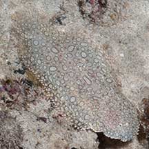
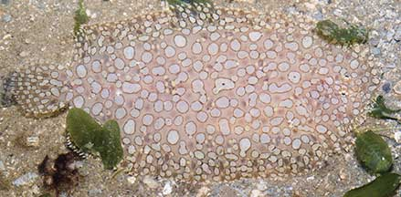
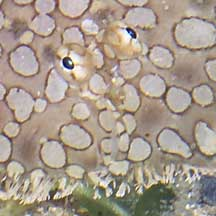
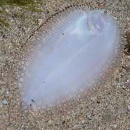
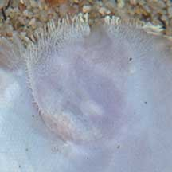
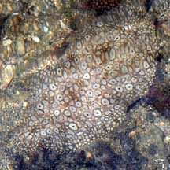
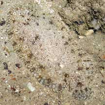
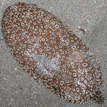
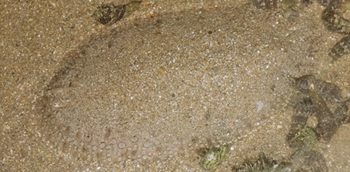

|
|
| fishes text index | photo index |
| Phylum Chordata > Subphylum Vertebrata > fishes > Order Pleuronectiformes > Family Soleidae |
| Peacock
sole Pardachirus pavoninus Family Soleidae updated Mar 2020 Where seen? This large pretty fish is sometimes seen on on sandy areas near seagrasses on some of our shores. Features: Those seen about 10-15cm, can grow to about 20cm. Eyes on right side. Small, highly curved mouth. Body oblong and very flat. No pectoral fins. Tail fin separated from the dorsal and anal fins. It has a pattern of circles that resemble eyes (a pale spot with a dark centre). This pattern of eyes possibly gives rise to its common name because the tail of a peacock also has a pattern of eyes. |
 Pulau Senang, Aug 10 |
 Tail fin joined to the dorsal and anal fins only at the base. Chek Jawa, Jul 05 |
 Eyes on the right side. |
 Underside. Pulau Jong, Apr 15 |
 Underside. Pulau Jong, Apr 15 |
| Toxic peacocks! The fish produces
a mucus from toxin glands along the base of the dorsal and anal fin
rays around the entire outline of the body. This may be toxic to small
fishes. According to FishBase,
this mucus appears to have shark-repellent properties. The more obvious
marking on this fish may serve to warn of its unpleasant nature. The Moses sole (Pardachirus mamoratus) found in the Red Sea produces an astringent, frothy, soap-like poison, called pardaxin, that was found to repel sharks. However, the toxin proved difficult to package and store and could not be used to protect humans. |
|
 Well camouflaged! Cyrene Reef, Jul 08 |
 Beting Bronok, Aug 05 |
 Changi, Jun 10 |
| What does it eat? Lying buried
in the sand, it preys on bottom dwelling animals including worms,
small crustaceans and molluscs. Human uses: Although the skin is said to have a bitter taste, the flesh is described as good to eat. |
| Peacock soles on Singapore shores |
On wildsingapore
flickr
|
| Other sightings on Singapore shores |
 Tanah Merah, Jul 09 Photo shared by James Koh on his blog. |
||
Links
|